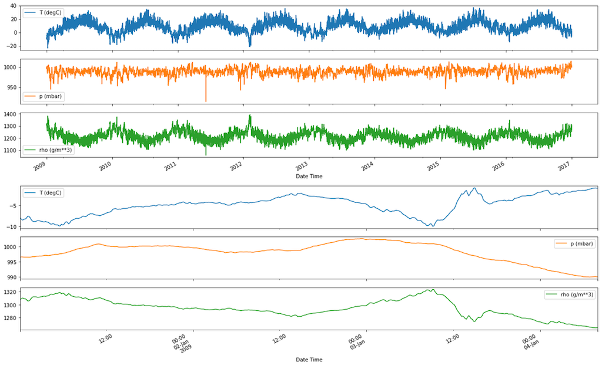
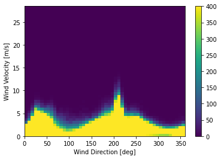
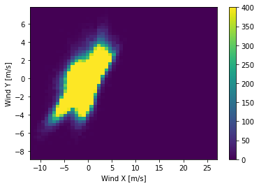
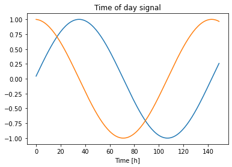
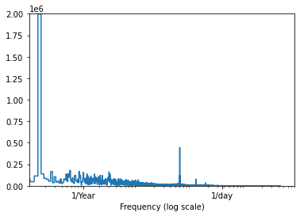
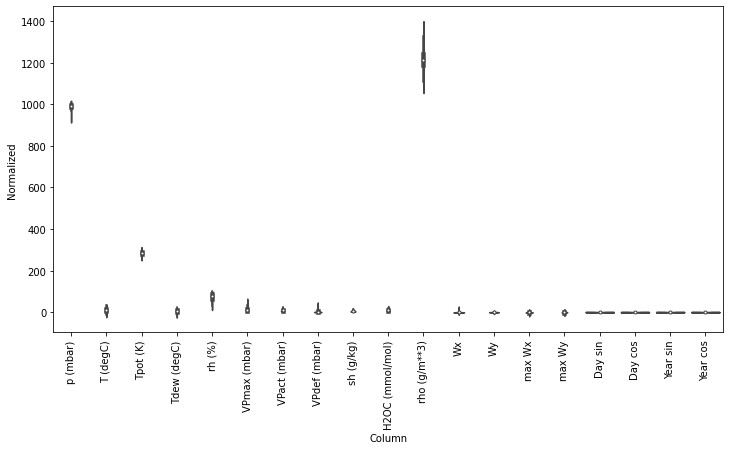
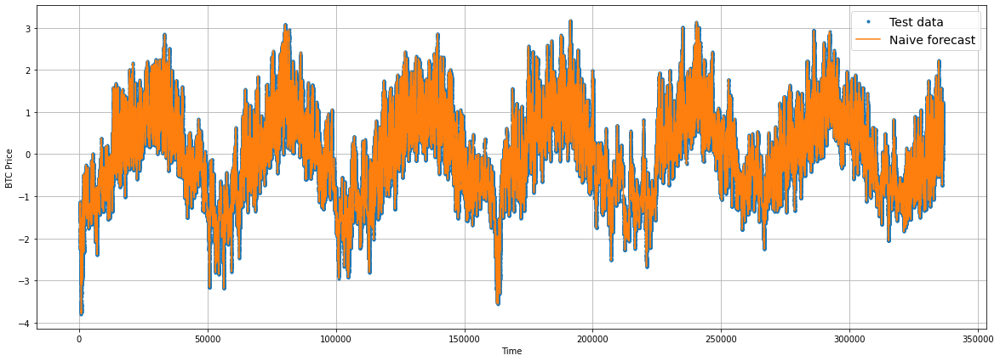
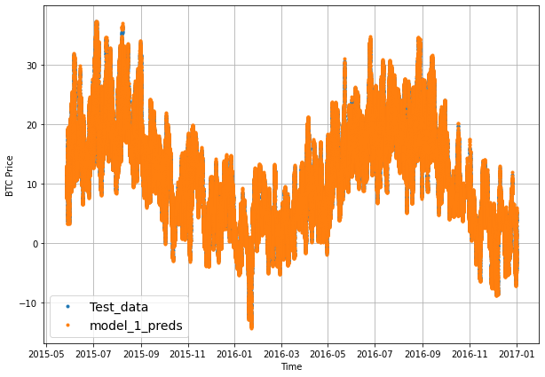
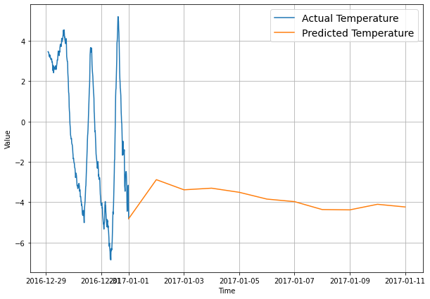

Time Series - Weather Forecast
At a Glance
What to expect
Import Dependencies
| import random
import os
import matplotlib.pyplot as plt
import matplotlib.image as mpimg
import pandas as pd
import seaborn as sns
# tensorflow dataset
import tensorflow_datasets as tfds
import csv
from datetime import datetime
# import wget as wget # only for PyCharm
import zipfile as zf
import pathlib
import numpy as np
import random
# Used in Prepare the data
from sklearn.model_selection import train_test_split
from tensorflow.keras.layers.experimental.preprocessing import TextVectorization
from tensorflow.keras.preprocessing.image import ImageDataGenerator # Use for preprocessing the data
from sklearn.preprocessing import OneHotEncoder, LabelEncoder
# Use in the model
import tensorflow as tf
from tensorflow.keras.models import Sequential
from tensorflow.keras.layers import Conv2D, MaxPool2D, Flatten, Dense
import tensorflow_hub as hub
from tensorflow.keras.layers.experimental import preprocessing # for data augmentation
from sklearn.naive_bayes import MultinomialNB
from sklearn.pipeline import Pipeline
from tensorflow.keras.utils import plot_model
# Evaluate model
from sklearn.metrics import accuracy_score, classification_report
from sklearn.metrics import precision_recall_fscore_support
# Utility scripts (confusion matrix)
import itertools
from sklearn.metrics import confusion_matrix
# mixed_precision
from tensorflow.keras import mixed_precision
|
Utility Functions
plot_time_series()
| # Create a function to plot time series data
def plot_time_series(timesteps, values, format='.', start=0, end=None, label=None):
"""
Plots a timesteps (a series of points in time) against values (a series of values across timesteps).
Parameters
---------
timesteps : array of timesteps
values : array of values across time
format : style of plot, default "."
start : where to start the plot (setting a value will index from start of timesteps & values)
end : where to end the plot (setting a value will index from end of timesteps & values)
label : label to show on plot of values
"""
# Plot the series
plt.plot(timesteps[start:end], values[start:end], format, label=label)
plt.xlabel("Time")
plt.ylabel("BTC Price")
if label:
plt.legend(fontsize=14) # make label bigger
plt.grid(True)
|
mean_absolute_scaled_error()
| # MASE implemented courtesy of sktime - https://github.com/alan-turing-institute/sktime/blob/ee7a06843a44f4aaec7582d847e36073a9ab0566/sktime/performance_metrics/forecasting/_functions.py#L16
def mean_absolute_scaled_error(y_true, y_pred):
"""
Implement MASE (assuming no seasonality of data).
"""
mae = tf.reduce_mean(tf.abs(y_true - y_pred))
# Find MAE of naive forecast (no seasonality)
mae_naive_no_season = tf.reduce_mean(tf.abs(y_true[1:] - y_true[:-1])) # our seasonality is 1 day (hence the shifting of 1 day)
return mae / mae_naive_no_season
|
evaluate_preds()
| def evaluate_preds(y_true, y_pred):
# Make sure float32 (for metric calculations)
y_true = tf.cast(y_true, dtype=tf.float32)
y_pred = tf.cast(y_pred, dtype=tf.float32)
# Calculate various metrics
mae = tf.keras.metrics.mean_absolute_error(y_true, y_pred)
mse = tf.keras.metrics.mean_squared_error(y_true, y_pred) # puts and emphasis on outliers (all errors get squared)
rmse = tf.sqrt(mse)
mape = tf.keras.metrics.mean_absolute_percentage_error(y_true, y_pred)
mase = mean_absolute_scaled_error(y_true, y_pred)
return {"mae": mae.numpy(),
"mse": mse.numpy(),
"rmse": rmse.numpy(),
"mape": mape.numpy(),
"mase": mase.numpy()}
|
get_labelled_windows()
| # Create function to label windowed data
def get_labelled_windows(x, horizon=1):
"""
Creates labels for windowed dataset.
E.g. if horizon=1 (default)
Input: [1, 2, 3, 4, 5, 6] -> Output: ([1, 2, 3, 4, 5], [6])
"""
return x[:, :-horizon], x[:, -horizon:]
|
make_windows()
| # Create function to view NumPy arrays as windows
def make_windows(x, window_size=7, horizon=1):
"""
Turns a 1D array into a 2D array of sequential windows of window_size.
"""
# 1. Create a window of specific window_size (add the horizon on the end for later labelling)
window_step = np.expand_dims(np.arange(window_size+horizon), axis=0)
# print(f"Window step:\n {window_step}")
# 2. Create a 2D array of multiple window steps (minus 1 to account for 0 indexing)
window_indexes = window_step + np.expand_dims(np.arange(len(x)-(window_size+horizon-1)), axis=0).T # create 2D array of windows of size window_size
# print(f"Window indexes:\n {window_indexes[:3], window_indexes[-3:], window_indexes.shape}")
# 3. Index on the target array (time series) with 2D array of multiple window steps
windowed_array = x[window_indexes]
# 4. Get the labelled windows
windows, labels = get_labelled_windows(windowed_array, horizon=horizon)
return windows, labels
|
WindowGenerator()
| class WindowGenerator():
def __init__(self, input_width, label_width, shift,
train_df=train_df, val_df=val_df,
# test_df=test_df, # optional
label_columns=None):
# Store the raw data.
self.train_df = train_df
self.val_df = val_df
# self.test_df = test_df # optional
# Work out the label column indices.
self.label_columns = label_columns
if label_columns is not None:
self.label_columns_indices = {name: i for i, name in
enumerate(label_columns)}
self.column_indices = {name: i for i, name in
enumerate(train_df.columns)}
# Work out the window parameters.
self.input_width = input_width
self.label_width = label_width
self.shift = shift
self.total_window_size = input_width + shift
self.input_slice = slice(0, input_width)
self.input_indices = np.arange(self.total_window_size)[self.input_slice]
self.label_start = self.total_window_size - self.label_width
self.labels_slice = slice(self.label_start, None)
self.label_indices = np.arange(self.total_window_size)[self.labels_slice]
def __repr__(self):
return '\n'.join([
f'Total window size: {self.total_window_size}',
f'Input indices: {self.input_indices}',
f'Label indices: {self.label_indices}',
f'Label column name(s): {self.label_columns}'])
|
split_window()
| def split_window(self, features):
inputs = features[:, self.input_slice, :]
labels = features[:, self.labels_slice, :]
if self.label_columns is not None:
labels = tf.stack(
[labels[:, :, self.column_indices[name]] for name in self.label_columns],
axis=-1)
# Slicing doesn't preserve static shape information, so set the shapes
# manually. This way the `tf.data.Datasets` are easier to inspect.
inputs.set_shape([None, self.input_width, None])
labels.set_shape([None, self.label_width, None])
return inputs, labels
WindowGenerator.split_window = split_window
|
make_dataset()
| def make_dataset(self, data):
data = np.array(data, dtype=np.float32)
ds = tf.keras.preprocessing.timeseries_dataset_from_array(
data=data,
targets=None,
sequence_length=self.total_window_size,
sequence_stride=1,
shuffle=True,
batch_size=32,)
ds = ds.map(self.split_window)
return ds
|
make_train_test_splits()
| # Make the train/test splits
def make_train_test_splits(windows, labels, test_split=0.2):
"""
Splits matching pairs of windows and labels into train and test splits.
"""
split_size = int(len(windows) * (1-test_split)) # this will default to 80% train/20% test
train_windows = windows[:split_size]
train_labels = labels[:split_size]
test_windows = windows[split_size:]
test_labels = labels[split_size:]
return train_windows, test_windows, train_labels, test_labels
|
create_model_checkpoint()
| # Create a function to implement a ModelCheckpoint callback with a specific filename
def create_model_checkpoint(model_name, save_path="model_experiments"):
return tf.keras.callbacks.ModelCheckpoint(filepath=os.path.join(save_path, model_name), # create filepath to save model
verbose=0, # only output a limited amount of text
save_best_only=True) # save only the best model to file
|
make_preds()
| def make_preds(model, input_data):
"""
Uses model to make predictions on input_data.
Parameters
----------
model: trained model
input_data: windowed input data (same kind of data model was trained on)
Returns model predictions on input_data.
"""
forecast = model.predict(input_data)
return tf.squeeze(forecast) # return 1D array of predictions
|
evaluate_preds()
| def evaluate_preds(y_true, y_pred):
# Make sure float32 (for metric calculations)
y_true = tf.cast(y_true, dtype=tf.float32)
y_pred = tf.cast(y_pred, dtype=tf.float32)
# Calculate various metrics
mae = tf.keras.metrics.mean_absolute_error(y_true, y_pred)
mse = tf.keras.metrics.mean_squared_error(y_true, y_pred)
rmse = tf.sqrt(mse)
mape = tf.keras.metrics.mean_absolute_percentage_error(y_true, y_pred)
mase = mean_absolute_scaled_error(y_true, y_pred)
# Account for different sized metrics (for longer horizons, reduce to single number)
if mae.ndim > 0: # if mae isn't already a scalar, reduce it to one by aggregating tensors to mean
mae = tf.reduce_mean(mae)
mse = tf.reduce_mean(mse)
rmse = tf.reduce_mean(rmse)
mape = tf.reduce_mean(mape)
mase = tf.reduce_mean(mase)
return {"mae": mae.numpy(),
"mse": mse.numpy(),
"rmse": rmse.numpy(),
"mape": mape.numpy(),
"mase": mase.numpy()}
|
make_ensemble_preds()
| # Create a function which uses a list of trained models to make and return a list of predictions
def make_ensemble_preds(ensemble_models, data):
ensemble_preds = []
for model in ensemble_models:
preds = model.predict(data) # make predictions with current ensemble model
ensemble_preds.append(preds)
return tf.constant(tf.squeeze(ensemble_preds))
|
get_upper_lower()
| # Find upper and lower bounds of ensemble predictions
def get_upper_lower(preds): # 1. Take the predictions of multiple randomly initialized deep learning neural networks
# 2. Measure the standard deviation of the predictions
std = tf.math.reduce_std(preds, axis=0)
# 3. Multiply the standard deviation by 1.96
interval = 1.96 * std # https://en.wikipedia.org/wiki/1.96
# 4. Get the prediction interval upper and lower bounds
preds_mean = tf.reduce_mean(preds, axis=0)
lower, upper = preds_mean - interval, preds_mean + interval
return lower, upper
|
Callbacks
early_stopping
| early_stopping = tf.keras.callbacks.EarlyStopping(monitor='val_loss',
patience=2,
mode='min')
|
Prepare Data
Download Data
| # DOWNLOAD PROJECT FILE
# pizza_file = wget.download(url) # Only for Pycharm
!wget https://storage.googleapis.com/tensorflow/tf-keras-datasets/jena_climate_2009_2016.csv.zip
# EXTRACT PROJECT FILE
# zip_ref = zf.ZipFile(pizza_file, "r") # Only for Pycharm
zip_ref = zf.ZipFile("jena_climate_2009_2016.csv.zip", "r")
zip_ref.extractall()
zip_ref.close()
|
--2021-12-22 19:07:28-- https://storage.googleapis.com/tensorflow/tf-keras-datasets/jena_climate_2009_2016.csv.zip
Resolving storage.googleapis.com (storage.googleapis.com)... 173.194.197.128, 173.194.198.128, 64.233.191.128, ...
Connecting to storage.googleapis.com (storage.googleapis.com)|173.194.197.128|:443... connected.
HTTP request sent, awaiting response... 200 OK
Length: 13568290 (13M) [application/zip]
Saving to: ‘jena_climate_2009_2016.csv.zip’
jena_climate_2009_2 100%[===================>] 12.94M --.-KB/s in 0.1s
2021-12-22 19:07:28 (95.2 MB/s) - ‘jena_climate_2009_2016.csv.zip’ saved [13568290/13568290]
Inspect Data
| # Parse dates and set date column to index
df = pd.read_csv("jena_climate_2009_2016.csv",
# parse_dates=["Date Time"],
# index_col=["Date Time"] # parse the date column (tell pandas column 1 is a datetime)
)
df.head()
|
Date Time p (mbar) T (degC) Tpot (K) Tdew (degC) rh (%) VPmax (mbar) VPact (mbar) VPdef (mbar) sh (g/kg) H2OC (mmol/mol) rho (g/m**3) wv (m/s) max. wv (m/s) wd (deg)
0 01.01.2009 00:10:00 996.52 -8.02 265.40 -8.90 93.3 3.33 3.11 0.22 1.94 3.12 1307.75 1.03 1.75 152.3
1 01.01.2009 00:20:00 996.57 -8.41 265.01 -9.28 93.4 3.23 3.02 0.21 1.89 3.03 1309.80 0.72 1.50 136.1
2 01.01.2009 00:30:00 996.53 -8.51 264.91 -9.31 93.9 3.21 3.01 0.20 1.88 3.02 1310.24 0.19 0.63 171.6
3 01.01.2009 00:40:00 996.51 -8.31 265.12 -9.07 94.2 3.26 3.07 0.19 1.92 3.08 1309.19 0.34 0.50 198.0
4 01.01.2009 00:50:00 996.51 -8.27 265.15 -9.04 94.1 3.27 3.08 0.19 1.92 3.09 1309.00 0.32 0.63 214.3
Date Time p (mbar) T (degC) Tpot (K) Tdew (degC) rh (%) VPmax (mbar) VPact (mbar) VPdef (mbar) sh (g/kg) H2OC (mmol/mol) rho (g/m**3) wv (m/s) max. wv (m/s) wd (deg)
420546 31.12.2016 23:20:00 1000.07 -4.05 269.10 -8.13 73.10 4.52 3.30 1.22 2.06 3.30 1292.98 0.67 1.52 240.0
420547 31.12.2016 23:30:00 999.93 -3.35 269.81 -8.06 69.71 4.77 3.32 1.44 2.07 3.32 1289.44 1.14 1.92 234.3
420548 31.12.2016 23:40:00 999.82 -3.16 270.01 -8.21 67.91 4.84 3.28 1.55 2.05 3.28 1288.39 1.08 2.00 215.2
420549 31.12.2016 23:50:00 999.81 -4.23 268.94 -8.53 71.80 4.46 3.20 1.26 1.99 3.20 1293.56 1.49 2.16 225.8
420550 01.01.2017 00:00:00 999.82 -4.82 268.36 -8.42 75.70 4.27 3.23 1.04 2.01 3.23 1296.38 1.23 1.96 184.9
(class 'pandas.core.frame.DataFrame')
RangeIndex: 420551 entries, 0 to 420550
Data columns (total 15 columns):
# Column Non-Null Count Dtype
--- ------ -------------- -----
0 Date Time 420551 non-null object
1 p (mbar) 420551 non-null float64
2 T (degC) 420551 non-null float64
3 Tpot (K) 420551 non-null float64
4 Tdew (degC) 420551 non-null float64
5 rh (%) 420551 non-null float64
6 VPmax (mbar) 420551 non-null float64
7 VPact (mbar) 420551 non-null float64
8 VPdef (mbar) 420551 non-null float64
9 sh (g/kg) 420551 non-null float64
10 H2OC (mmol/mol) 420551 non-null float64
11 rho (g/m**3) 420551 non-null float64
12 wv (m/s) 420551 non-null float64
13 max. wv (m/s) 420551 non-null float64
14 wd (deg) 420551 non-null float64
dtypes: float64(14), object(1)
memory usage: 48.1+ MB
0 01.01.2009 00:10:00
1 01.01.2009 00:20:00
2 01.01.2009 00:30:00
3 01.01.2009 00:40:00
4 01.01.2009 00:50:00
...
420546 31.12.2016 23:20:00
420547 31.12.2016 23:30:00
420548 31.12.2016 23:40:00
420549 31.12.2016 23:50:00
420550 01.01.2017 00:00:00
Name: Date Time, Length: 420551, dtype: object
RangeIndex(start=0, stop=420551, step=1)
| date_time = pd.to_datetime(df.pop('Date Time'), format='%d.%m.%Y %H:%M:%S')
|
| plot_cols = ['T (degC)', 'p (mbar)', 'rho (g/m**3)']
plot_features = df[plot_cols]
plot_features.index = date_time
_ = plot_features.plot(figsize=(20,6), subplots=True)
plot_features = df[plot_cols][:480]
plot_features.index = date_time[:480]
_ = plot_features.plot(figsize=(20,6), subplots=True)
|

| df.describe().transpose()
|
count mean std min 25% 50% 75% max
p (mbar) 420551.0 989.212776 8.358481 913.60 984.20 989.58 994.72 1015.35
T (degC) 420551.0 9.450147 8.423365 -23.01 3.36 9.42 15.47 37.28
Tpot (K) 420551.0 283.492743 8.504471 250.60 277.43 283.47 289.53 311.34
Tdew (degC) 420551.0 4.955854 6.730674 -25.01 0.24 5.22 10.07 23.11
rh (%) 420551.0 76.008259 16.476175 12.95 65.21 79.30 89.40 100.00
VPmax (mbar) 420551.0 13.576251 7.739020 0.95 7.78 11.82 17.60 63.77
VPact (mbar) 420551.0 9.533756 4.184164 0.79 6.21 8.86 12.35 28.32
VPdef (mbar) 420551.0 4.042412 4.896851 0.00 0.87 2.19 5.30 46.01
sh (g/kg) 420551.0 6.022408 2.656139 0.50 3.92 5.59 7.80 18.13
H2OC (mmol/mol) 420551.0 9.640223 4.235395 0.80 6.29 8.96 12.49 28.82
rho (g/m**3) 420551.0 1216.062748 39.975208 1059.45 1187.49 1213.79 1242.77 1393.54
wv (m/s) 420551.0 1.702224 65.446714 -9999.00 0.99 1.76 2.86 28.49
max. wv (m/s) 420551.0 3.056555 69.016932 -9999.00 1.76 2.96 4.74 23.50
wd (deg) 420551.0 174.743738 86.681693 0.00 124.90 198.10 234.10 360.00
| # Wind velocity min values is likely errorneous (need to be fix)
wv = df['wv (m/s)']
bad_wv = wv == -9999.0
wv[bad_wv] = 0.0
max_wv = df['max. wv (m/s)']
bad_max_wv = max_wv == -9999.0
max_wv[bad_max_wv] = 0.0
# The above inplace edits are reflected in the DataFrame.
df['wv (m/s)'].min()
|
| # Current wind direction
plt.hist2d(df['wd (deg)'], df['wv (m/s)'], bins=(50, 50), vmax=400)
plt.colorbar()
plt.xlabel('Wind Direction [deg]')
plt.ylabel('Wind Velocity [m/s]')
|

| # It will be easier to interpred if change the wind direction into a wind vector
wv = df.pop('wv (m/s)')
max_wv = df.pop('max. wv (m/s)')
# Convert to radians.
wd_rad = df.pop('wd (deg)')*np.pi / 180
# Calculate the wind x and y components.
df['Wx'] = wv*np.cos(wd_rad)
df['Wy'] = wv*np.sin(wd_rad)
# Calculate the max wind x and y components.
df['max Wx'] = max_wv*np.cos(wd_rad)
df['max Wy'] = max_wv*np.sin(wd_rad)
|
| # Visualize our changes of wind direction vectors
plt.hist2d(df['Wx'], df['Wy'], bins=(50, 50), vmax=400)
plt.colorbar()
plt.xlabel('Wind X [m/s]')
plt.ylabel('Wind Y [m/s]')
ax = plt.gca()
ax.axis('tight')
|

| timestamp_s = date_time.map(pd.Timestamp.timestamp)
|
| day = 24*60*60
year = (365.2425)*day
df['Day sin'] = np.sin(timestamp_s * (2 * np.pi / day))
df['Day cos'] = np.cos(timestamp_s * (2 * np.pi / day))
df['Year sin'] = np.sin(timestamp_s * (2 * np.pi / year))
df['Year cos'] = np.cos(timestamp_s * (2 * np.pi / year))
|
| plt.plot(np.array(df['Day sin'])[:150])
plt.plot(np.array(df['Day cos'])[:150])
plt.xlabel('Time [h]')
plt.title('Time of day signal')
|

| # Find the freaquncy of the peak temperater of the year and day (optional)
fft = tf.signal.rfft(df['T (degC)'])
f_per_dataset = np.arange(0, len(fft))
n_samples_h = len(df['T (degC)'])
hours_per_year = 24*365.2524
years_per_dataset = n_samples_h/(hours_per_year)
f_per_year = f_per_dataset/years_per_dataset
plt.step(f_per_year, np.abs(fft))
plt.xscale('log')
plt.ylim(0, 2000000)
plt.xlim([0.1, max(plt.xlim())])
plt.xticks([1, 365.2524], labels=['1/Year', '1/day'])
_ = plt.xlabel('Frequency (log scale)')
|

Prepare Data
| # Split the data
column_indices = {name: i for i, name in enumerate(df.columns)}
n = len(df)
train_df = df[0:int(n*0.8)]
val_df = df[int(n*0.8):]
num_features = df.shape[1]
|
| # Normalize the data
train_mean = train_df.mean()
train_std = train_df.std()
train_df = (train_df - train_mean) / train_std
val_df = (val_df - train_mean) / train_std
|
| # Viaulize the data
df_std = (df - train_mean) / train_std
df_std = df_std.melt(var_name='Column', value_name='Normalized')
plt.figure(figsize=(12, 6))
ax = sns.violinplot(x='Column', y='Normalized', data=df_std)
_ = ax.set_xticklabels(df.keys(), rotation=90)
|

| w1 = WindowGenerator(input_width=24, label_width=1, shift=24,
label_columns=['T (degC)'])
w1
|
Total window size: 48
Input indices: [ 0 1 2 3 4 5 6 7 8 9 10 11 12 13 14 15 16 17 18 19 20 21 22 23]
Label indices: [47]
Label column name(s): ['T (degC)']
| w2 = WindowGenerator(input_width=6, label_width=1, shift=1,
label_columns=['T (degC)'])
w2
|
Total window size: 7
Input indices: [0 1 2 3 4 5]
Label indices: [6]
Label column name(s): ['T (degC)']
| # Stack three slices, the length of the total window.
example_window = tf.stack([np.array(train_df[:w2.total_window_size]),
np.array(train_df[100:100+w2.total_window_size]),
np.array(train_df[200:200+w2.total_window_size])])
example_inputs, example_labels = w2.split_window(example_window)
print('All shapes are: (batch, time, features)')
print(f'Window shape: {example_window.shape}')
print(f'Inputs shape: {example_inputs.shape}')
print(f'Labels shape: {example_labels.shape}')
|
All shapes are: (batch, time, features)
Window shape: (3, 7, 19)
Inputs shape: (3, 6, 19)
Labels shape: (3, 1, 1)
| WindowGenerator.make_dataset = make_dataset
|
| @property
def train(self):
return self.make_dataset(self.train_df)
@property
def val(self):
return self.make_dataset(self.val_df)
@property
def example(self):
"""Get and cache an example batch of `inputs, labels` for plotting."""
result = getattr(self, '_example', None)
if result is None:
# No example batch was found, so get one from the `.train` dataset
result = next(iter(self.train))
# And cache it for next time
self._example = result
return result
WindowGenerator.train = train
WindowGenerator.val = val
WindowGenerator.example = example
|
| # Each element is an (inputs, label) pair.
w2.train.element_spec
|
(TensorSpec(shape=(None, 6, 19), dtype=tf.float32, name=None),
TensorSpec(shape=(None, 1, 1), dtype=tf.float32, name=None))
| for example_inputs, example_labels in w2.train.take(1):
print(f'Inputs shape (batch, time, features): {example_inputs.shape}')
print(f'Labels shape (batch, time, features): {example_labels.shape}')
|
Inputs shape (batch, time, features): (32, 6, 19)
Labels shape (batch, time, features): (32, 1, 1)
Model 0: Naive Forecast
Adjust Data
| single_step_window = WindowGenerator(
input_width=1, label_width=1, shift=1,
label_columns=['T (degC)'])
single_step_window
|
Total window size: 2
Input indices: [0]
Label indices: [1]
Label column name(s): ['T (degC)']
| for example_inputs, example_labels in single_step_window.train.take(1):
print(f'Inputs shape (batch, time, features): {example_inputs.shape}')
print(f'Labels shape (batch, time, features): {example_labels.shape}')
|
Inputs shape (batch, time, features): (32, 1, 19)
Labels shape (batch, time, features): (32, 1, 1)
p (mbar) T (degC) Tpot (K) Tdew (degC) rh (%) VPmax (mbar) VPact (mbar) VPdef (mbar) sh (g/kg) H2OC (mmol/mol) rho (g/m**3) Wx Wy max Wx max Wy Day sin Day cos Year sin Year cos
0 0.920680 -2.014957 -2.073273 -1.969043 1.036096 -1.315985 -1.490551 -0.782128 -1.493218 -1.495486 2.243867 -0.147651 0.571124 -0.177126 0.594215 0.061760 1.413193 -0.050445 1.401962
1 0.926669 -2.061161 -2.119059 -2.024671 1.042156 -1.329358 -1.512235 -0.784268 -1.512194 -1.516904 2.294952 0.048198 0.584294 -0.026887 0.680929 0.123331 1.409158 -0.050276 1.401960
2 0.921878 -2.073009 -2.130799 -2.029063 1.072460 -1.332033 -1.514644 -0.786409 -1.515989 -1.519284 2.305916 0.213002 0.280838 0.119816 0.318173 0.184668 1.402441 -0.050108 1.401958
3 0.919483 -2.049314 -2.106145 -1.993929 1.090642 -1.325346 -1.500188 -0.788550 -1.500808 -1.505005 2.279751 0.145554 0.195354 0.167174 0.223840 0.245653 1.393055 -0.049940 1.401957
4 0.919483 -2.044575 -2.102623 -1.989538 1.084582 -1.324009 -1.497779 -0.788550 -1.500808 -1.502625 2.275016 0.174949 0.146914 0.152774 0.147118 0.306170 1.381018 -0.049772 1.401955
| mod_0_y = train_df["T (degC)"]
|
0 -2.014957
1 -2.061161
2 -2.073009
3 -2.049314
4 -2.044575
Name: T (degC), dtype: float64
| len(mod_0_y), len(mod_0_x)
|
Create, Compile, and Run Model
| # Create a naïve forecast
naive_forecast = mod_0_y[:-1] # Naïve forecast equals every value excluding the last value
|
| # [Optional, Visualize] View frist 10 and last 10
naive_forecast[:10], naive_forecast[-10:]
|
(0 -2.014957
1 -2.061161
2 -2.073009
3 -2.049314
4 -2.044575
5 -2.018511
6 -1.967567
7 -1.967567
8 -2.001924
9 -2.063531
Name: T (degC), dtype: float64, 336429 1.134077
336430 1.129338
336431 1.122230
336432 1.126969
336433 1.105643
336434 1.087872
336435 1.085503
336436 1.073655
336437 1.059439
336438 1.035744
Name: T (degC), dtype: float64)
Evaluate Model
| plt.figure(figsize=(20, 7))
offset = 300 # offset the values by 300 timesteps
plot_time_series(timesteps=mod_0_x, values=mod_0_y, start=offset, label="Test data")
plot_time_series(timesteps=mod_0_x[1:], values=naive_forecast, format="-", start=offset, label="Naive forecast")
|

| model_0_results = evaluate_preds(y_true=mod_0_y[1:],
y_pred=naive_forecast)
model_0_results
|
{'mae': 0.019306783,
'mape': 13.094261,
'mase': 1.000004,
'mse': 0.00086315005,
'rmse': 0.029379414}
Model 1: Dense (window=30, horizon=7)
Adjust Data
| HORIZON = 7
WINDOW_SIZE = 30
full_windows, full_labels = make_windows(prices, window_size=WINDOW_SIZE, horizon=HORIZON)
len(full_windows), len(full_labels)
|
| train_windows, test_windows, train_labels, test_labels = make_train_test_splits(windows=full_windows, labels=full_labels, test_split=0.2)
len(train_windows), len(test_windows), len(train_labels), len(test_labels)
|
(336412, 84103, 336412, 84103)
Create, Compile, and Run Model
| tf.random.set_seed(42)
# CREATE MODEL (same as model_1 except with different data input size)
model_1 = tf.keras.Sequential([
tf.keras.layers.Dense(128, activation="relu"),
tf.keras.layers.Dense(HORIZON)
], name="model_1_dense")
# COMPILE MODEL
model_1.compile(loss="mae",
optimizer=tf.keras.optimizers.Adam())
# FIT MODEL
model_1.fit(train_windows,
train_labels,
batch_size=128,
epochs=100,
verbose=0,
validation_data=(test_windows, test_labels),
callbacks=[create_model_checkpoint(model_name=model_1.name)])
|
INFO:tensorflow:Assets written to: model_experiments/model_1_dense/assets
INFO:tensorflow:Assets written to: model_experiments/model_1_dense/assets
INFO:tensorflow:Assets written to: model_experiments/model_1_dense/assets
INFO:tensorflow:Assets written to: model_experiments/model_1_dense/assets
INFO:tensorflow:Assets written to: model_experiments/model_1_dense/assets
INFO:tensorflow:Assets written to: model_experiments/model_1_dense/assets
(keras.callbacks.History at 0x7f6661d09ed0)
Evaluate Model
| model_1.evaluate(test_windows, test_labels)
|
2629/2629 [==============================] - 6s 2ms/step - loss: 0.3824
0.3823564350605011
| # Load in best version of model_1 and evaluate
model_1 = tf.keras.models.load_model("model_experiments/model_1_dense/")
model_1.evaluate(test_windows, test_labels)
|
2629/2629 [==============================] - 6s 2ms/step - loss: 0.3824
0.3823564350605011
| # The predictions are going to be 7 steps at a time (this is the HORIZON size)
model_1_preds = make_preds(model_1,
input_data=test_windows)
model_1_preds[:5]
|
(tf.Tensor: shape=(5, 7), dtype=float32, numpy=
array([[17.249609, 17.100615, 16.99247 , 16.85171 , 16.87737 , 16.676012,
16.517342],
[17.051706, 16.961212, 16.77145 , 16.689157, 16.607464, 16.557093,
16.300009],
[16.823112, 16.763466, 16.553705, 16.413565, 16.283573, 16.198637,
15.992966],
[16.50794 , 16.393263, 16.236275, 16.11251 , 16.019592, 15.820904,
15.609121],
[16.447262, 16.299593, 16.120775, 15.986055, 15.925607, 15.761848,
15.614763]], dtype=float32))
| # Get model_3 results aggregated to single values
model_1_results = evaluate_preds(y_true=tf.squeeze(test_labels),
y_pred=model_1_preds)
model_1_results
|
{'mae': 0.38235667,
'mape': 53578.86,
'mase': 2.307819,
'mse': 0.37676606,
'rmse': 0.4397074}
| offset = 300
plt.figure(figsize=(10, 7))
# Plot model_3_preds by aggregating them (note: this condenses information so the preds will look fruther ahead than the test data)
plot_time_series(timesteps=X_test[-len(test_windows):],
values=test_labels[:, 0],
start=offset,
label="Test_data")
plot_time_series(timesteps=X_test[-len(test_windows):],
values=tf.reduce_mean(model_1_preds, axis=1),
format="-",
start=offset,
label="model_1_preds")
|

Model 2: Conv1D
Adjust Data
| HORIZON = 1 # predict next day
WINDOW_SIZE = 7 # use previous week worth of data
|
| # Create windowed dataset
full_windows, full_labels = make_windows(prices, window_size=WINDOW_SIZE, horizon=HORIZON)
len(full_windows), len(full_labels)
|
| # Create train/test splits
train_windows, test_windows, train_labels, test_labels = make_train_test_splits(full_windows, full_labels)
len(train_windows), len(test_windows), len(train_labels), len(test_labels)
|
(336435, 84109, 336435, 84109)
| # Check data sample shapes
train_windows[0].shape # returns (WINDOW_SIZE, )
|
| # Before we pass our data to the Conv1D layer, we have to reshape it in order to make sure it works
x = tf.constant(train_windows[0])
expand_dims_layer = tf.keras.layers.Lambda(lambda x: tf.expand_dims(x, axis=1)) # add an extra dimension for timesteps
print(f"Original shape: {x.shape}") # (WINDOW_SIZE)
print(f"Expanded shape: {expand_dims_layer(x).shape}") # (WINDOW_SIZE, input_dim)
print(f"Original values with expanded shape:\n {expand_dims_layer(x)}")
|
Original shape: (7,)
Expanded shape: (7, 1)
Original values with expanded shape:
[[-8.02]
[-8.41]
[-8.51]
[-8.31]
[-8.27]
[-8.05]
[-7.62]]
Create, Compile, and Run Model
| tf.random.set_seed(42)
# CREATE MODEL
model_2 = tf.keras.Sequential([
# Create Lambda layer to reshape inputs, without this layer, the model will error
tf.keras.layers.Lambda(lambda x: tf.expand_dims(x, axis=1)), # resize the inputs to adjust for window size / Conv1D 3D input requirements
tf.keras.layers.Conv1D(filters=128, kernel_size=5, padding="causal", activation="relu"),
tf.keras.layers.Dense(HORIZON)
], name="model_2_conv1D")
# COMPILE MODEL
model_2.compile(loss="mae",
optimizer=tf.keras.optimizers.Adam())
# FIT MODEL
model_2.fit(train_windows,
train_labels,
batch_size=128,
epochs=100,
verbose=0,
validation_data=(test_windows, test_labels),
callbacks=[create_model_checkpoint(model_name=model_2.name)])
|
INFO:tensorflow:Assets written to: model_experiments/model_2_conv1D/assets
INFO:tensorflow:Assets written to: model_experiments/model_2_conv1D/assets
INFO:tensorflow:Assets written to: model_experiments/model_2_conv1D/assets
INFO:tensorflow:Assets written to: model_experiments/model_2_conv1D/assets
(keras.callbacks.History at 0x7f6666c34a90)
Evaluate Model
Model: "model_2_conv1D"
_________________________________________________________________
Layer (type) Output Shape Param #
=================================================================
lambda_1 (Lambda) (None, 1, 7) 0
conv1d (Conv1D) (None, 1, 128) 4608
dense_2 (Dense) (None, 1, 1) 129
=================================================================
Total params: 4,737
Trainable params: 4,737
Non-trainable params: 0
_________________________________________________________________
| # Load in best performing Conv1D model and evaluate it on the test data
model_2 = tf.keras.models.load_model("model_experiments/model_2_conv1D")
model_2.evaluate(test_windows, test_labels)
|
2629/2629 [==============================] - 10s 4ms/step - loss: 0.1316
0.13161008059978485
| # Make predictions
model_2_preds = make_preds(model_2, test_windows)
model_2_preds[:10]
|
(tf.Tensor: shape=(10,), dtype=float32, numpy=
array([17.277367, 17.02112 , 16.778587, 16.547289, 16.379845, 16.107668,
15.943503, 15.86677 , 15.689507, 15.839124], dtype=float32))
| # Evaluate predictions
model_2_results = evaluate_preds(y_true=tf.squeeze(test_labels),
y_pred=model_2_preds)
model_2_results
|
{'mae': 0.13160992,
'mape': 21096.268,
'mase': 0.79428935,
'mse': 0.04322096,
'rmse': 0.20789652}
Model 3: RNN (LSTM)
Adjust Data
| HORIZON = 1 # predict next day
WINDOW_SIZE = 7 # use previous week worth of data
|
| # Create windowed dataset
full_windows, full_labels = make_windows(prices, window_size=WINDOW_SIZE, horizon=HORIZON)
len(full_windows), len(full_labels)
|
| # Create train/test splits
train_windows, test_windows, train_labels, test_labels = make_train_test_splits(full_windows, full_labels)
len(train_windows), len(test_windows), len(train_labels), len(test_labels)
|
(336435, 84109, 336435, 84109)
Create, Compile, and Run Model
| tf.random.set_seed(42)
# CREATE MODEL
# Let's build an LSTM model with the Functional API
inputs = tf.keras.layers.Input(shape=(WINDOW_SIZE))
x = tf.keras.layers.Lambda(lambda x: tf.expand_dims(x, axis=1))(inputs) # expand input dimension to be compatible with LSTM
# print(x.shape)
# x = layers.LSTM(128, activation="relu", return_sequences=True)(x) # this layer will error if the inputs are not the right shape
x = tf.keras.layers.LSTM(128, activation="relu")(x) # using the tanh loss function results in a massive error
# print(x.shape)
# Add another optional dense layer (you could add more of these to see if they improve model performance)
# x = layers.Dense(32, activation="relu")(x)
output = tf.keras.layers.Dense(HORIZON)(x)
model_3 = tf.keras.Model(inputs=inputs, outputs=output, name="model_3_lstm")
# COMPILE MODEL
model_3.compile(loss="mae",
optimizer=tf.keras.optimizers.Adam())
# FIT MODEL
# Seems when saving the model several warnings are appearing: https://github.com/tensorflow/tensorflow/issues/47554
model_3.fit(train_windows,
train_labels,
epochs=100,
verbose=0,
batch_size=128,
validation_data=(test_windows, test_labels),
callbacks=[create_model_checkpoint(model_name=model_3.name)])
|
WARNING:tensorflow:Layer lstm will not use cuDNN kernels since it doesn't meet the criteria. It will use a generic GPU kernel as fallback when running on GPU.
INFO:tensorflow:Assets written to: model_experiments/model_3_lstm/assets
WARNING:absl:(keras.layers.recurrent.LSTMCell object at 0x7f6665af9e10) has the same name 'LSTMCell' as a built-in Keras object. Consider renaming (class 'keras.layers.recurrent.LSTMCell') to avoid naming conflicts when loading with `tf.keras.models.load_model`. If renaming is not possible, pass the object in the `custom_objects` parameter of the load function.
INFO:tensorflow:Assets written to: model_experiments/model_3_lstm/assets
INFO:tensorflow:Assets written to: model_experiments/model_3_lstm/assets
WARNING:absl:(keras.layers.recurrent.LSTMCell object at 0x7f6665af9e10) has the same name 'LSTMCell' as a built-in Keras object. Consider renaming (class 'keras.layers.recurrent.LSTMCell') to avoid naming conflicts when loading with `tf.keras.models.load_model`. If renaming is not possible, pass the object in the `custom_objects` parameter of the load function.
INFO:tensorflow:Assets written to: model_experiments/model_3_lstm/assets
INFO:tensorflow:Assets written to: model_experiments/model_3_lstm/assets
WARNING:absl:(keras.layers.recurrent.LSTMCell object at 0x7f6665af9e10) has the same name 'LSTMCell' as a built-in Keras object. Consider renaming (class 'keras.layers.recurrent.LSTMCell') to avoid naming conflicts when loading with `tf.keras.models.load_model`. If renaming is not possible, pass the object in the `custom_objects` parameter of the load function.
INFO:tensorflow:Assets written to: model_experiments/model_3_lstm/assets
INFO:tensorflow:Assets written to: model_experiments/model_3_lstm/assets
WARNING:absl:(keras.layers.recurrent.LSTMCell object at 0x7f6665af9e10) has the same name 'LSTMCell' as a built-in Keras object. Consider renaming (class 'keras.layers.recurrent.LSTMCell') to avoid naming conflicts when loading with `tf.keras.models.load_model`. If renaming is not possible, pass the object in the `custom_objects` parameter of the load function.
INFO:tensorflow:Assets written to: model_experiments/model_3_lstm/assets
INFO:tensorflow:Assets written to: model_experiments/model_3_lstm/assets
WARNING:absl:(keras.layers.recurrent.LSTMCell object at 0x7f6665af9e10) has the same name 'LSTMCell' as a built-in Keras object. Consider renaming (class 'keras.layers.recurrent.LSTMCell') to avoid naming conflicts when loading with `tf.keras.models.load_model`. If renaming is not possible, pass the object in the `custom_objects` parameter of the load function.
(keras.callbacks.History at 0x7f66613d2e50)
Evaluate Model
| # Load in best version of model 5 and evaluate on the test data
model_3 = tf.keras.models.load_model("model_experiments/model_3_lstm/")
model_3.evaluate(test_windows, test_labels)
|
WARNING:tensorflow:Layer lstm will not use cuDNN kernels since it doesn't meet the criteria. It will use a generic GPU kernel as fallback when running on GPU.
WARNING:tensorflow:Layer lstm will not use cuDNN kernels since it doesn't meet the criteria. It will use a generic GPU kernel as fallback when running on GPU.
2629/2629 [==============================] - 13s 5ms/step - loss: 0.1325
0.1324942260980606
| # Make predictions with our LSTM model
model_3_preds = make_preds(model_3, test_windows)
model_3_preds[:10]
|
(tf.Tensor: shape=(10,), dtype=float32, numpy=
array([17.283913, 17.03394 , 16.7935 , 16.560795, 16.391624, 16.124992,
15.958645, 15.876349, 15.701792, 15.841902], dtype=float32))
| # Evaluate model 5 preds
model_3_results = evaluate_preds(y_true=tf.squeeze(test_labels),
y_pred=model_3_preds)
model_3_results
|
{'mae': 0.13249426,
'mape': 20953.273,
'mase': 0.7996265,
'mse': 0.043446194,
'rmse': 0.20843752}
Model 4: Multivariate Time Series Model
Adjust Data
| X = df.drop(set_var, axis=1).astype(np.float32)
X.head()
|
p (mbar) Tpot (K) Tdew (degC) rh (%) VPmax (mbar) VPact (mbar) VPdef (mbar) sh (g/kg) H2OC (mmol/mol) rho (g/m**3) Wx Wy max Wx max Wy Day sin Day cos Year sin Year cos
0 996.520020 265.399994 -8.90 93.300003 3.33 3.11 0.22 1.94 3.12 1307.750000 -0.911955 0.478787 -1.549439 0.813474 0.043619 0.999048 0.009452 0.999955
1 996.570007 265.010010 -9.28 93.400002 3.23 3.02 0.21 1.89 3.03 1309.800049 -0.518797 0.499249 -1.080827 1.040103 0.087156 0.996195 0.009571 0.999954
2 996.530029 264.910004 -9.31 93.900002 3.21 3.01 0.20 1.88 3.02 1310.239990 -0.187962 0.027756 -0.623242 0.092032 0.130526 0.991445 0.009691 0.999953
3 996.510010 265.119995 -9.07 94.199997 3.26 3.07 0.19 1.92 3.08 1309.189941 -0.323359 -0.105066 -0.475528 -0.154509 0.173648 0.984808 0.009810 0.999952
4 996.510010 265.149994 -9.04 94.099998 3.27 3.08 0.19 1.92 3.09 1309.000000 -0.264351 -0.180328 -0.520442 -0.355021 0.216440 0.976296 0.009930 0.999951
0 -8.02
1 -8.41
2 -8.51
3 -8.31
4 -8.27
Name: T (degC), dtype: float64
| # Make train and test sets
split_size = int(len(X) * 0.8)
X_train, y_train = X[:split_size], y[:split_size]
X_test, y_test = X[split_size:], y[split_size:]
len(X_train), len(y_train), len(X_test), len(y_test)
|
(336440, 336440, 84111, 84111)
Create, Compile, and Run Model
| tf.random.set_seed(42)
# Make multivariate time series model
inputs = tf.keras.layers.Input(shape=X_train.shape[1])
x = tf.keras.layers.Dense(128, activation="relu")(inputs)
x = tf.keras.layers.Dense(128, activation="relu")(x) # adding an extra layer here should lead to beating the naive Model
outputs = tf.keras.layers.Dense(HORIZON)(x)
model_4 = tf.keras.models.Model(inputs, outputs, name="model_4_dense_multivariate")
# Compile
model_4.compile(loss="mae",
optimizer=tf.keras.optimizers.Adam())
# Fit
model_4.fit(X_train, y_train,
epochs=10,
batch_size=128,
verbose=1,
validation_data=(X_test, y_test),
callbacks=[create_model_checkpoint(model_name=model_4.name)])
|
Epoch 1/10
2628/2629 [============================>.] - ETA: 0s - loss: 3.7433INFO:tensorflow:Assets written to: model_experiments/model_4_dense_multivariate/assets
INFO:tensorflow:Assets written to: model_experiments/model_4_dense_multivariate/assets
2629/2629 [==============================] - 13s 5ms/step - loss: 3.7427 - val_loss: 3.1779
Epoch 2/10
2628/2629 [============================>.] - ETA: 0s - loss: 1.2714INFO:tensorflow:Assets written to: model_experiments/model_4_dense_multivariate/assets
INFO:tensorflow:Assets written to: model_experiments/model_4_dense_multivariate/assets
2629/2629 [==============================] - 11s 4ms/step - loss: 1.2714 - val_loss: 0.8821
Epoch 3/10
2629/2629 [==============================] - 10s 4ms/step - loss: 0.8113 - val_loss: 2.1001
Epoch 4/10
2629/2629 [==============================] - 10s 4ms/step - loss: 0.5832 - val_loss: 1.7492
Epoch 5/10
2621/2629 [============================>.] - ETA: 0s - loss: 0.4073INFO:tensorflow:Assets written to: model_experiments/model_4_dense_multivariate/assets
INFO:tensorflow:Assets written to: model_experiments/model_4_dense_multivariate/assets
2629/2629 [==============================] - 11s 4ms/step - loss: 0.4071 - val_loss: 0.3308
Epoch 6/10
2619/2629 [============================>.] - ETA: 0s - loss: 0.3046INFO:tensorflow:Assets written to: model_experiments/model_4_dense_multivariate/assets
INFO:tensorflow:Assets written to: model_experiments/model_4_dense_multivariate/assets
2629/2629 [==============================] - 11s 4ms/step - loss: 0.3052 - val_loss: 0.1936
Epoch 7/10
2629/2629 [==============================] - ETA: 0s - loss: 0.2587INFO:tensorflow:Assets written to: model_experiments/model_4_dense_multivariate/assets
INFO:tensorflow:Assets written to: model_experiments/model_4_dense_multivariate/assets
2629/2629 [==============================] - 11s 4ms/step - loss: 0.2587 - val_loss: 0.0786
Epoch 8/10
2629/2629 [==============================] - 14s 5ms/step - loss: 0.2296 - val_loss: 0.1550
Epoch 9/10
2629/2629 [==============================] - 10s 4ms/step - loss: 0.2188 - val_loss: 0.2338
Epoch 10/10
2629/2629 [==============================] - 10s 4ms/step - loss: 0.1769 - val_loss: 0.1046
(keras.callbacks.History at 0x7f65670c1a50)
Evaluate Model
| # Make sure best model is loaded and evaluate
model_4 = tf.keras.models.load_model("model_experiments/model_4_dense_multivariate")
model_4.evaluate(X_test, y_test)
|
2629/2629 [==============================] - 7s 2ms/step - loss: 0.0786
0.07864639163017273
| # Make predictions on multivariate data
model_4_preds = tf.squeeze(model_4.predict(X_test))
model_4_preds[:10]
|
(tf.Tensor: shape=(10,), dtype=float32, numpy=
array([17.53682 , 17.427748, 17.19194 , 16.96452 , 16.747868, 16.57054 ,
16.33654 , 16.159548, 16.047775, 15.887789], dtype=float32))
| # Evaluate preds
model_4_results = evaluate_preds(y_true=y_test,
y_pred=model_4_preds)
model_4_results
|
{'mae': 0.07864646,
'mape': 16434.877,
'mase': 0.47464615,
'mse': 0.011551642,
'rmse': 0.10747856}
Compare Models
| # Compare different model results (w = window, h = horizon, e.g. w=7 means a window size of 7)
model_results = pd.DataFrame({"model_0_naive_forecast": model_0_results,
"model_1_dense_w30_h7": model_1_results,
"model_2_Conv1D": model_2_results,
"model_3_RNN (LSTM)": model_3_results,
"model_4_Multivariate": model_4_results
}).T
model_results.head()
|
mae mse rmse mape mase
model_0_naive_forecast 0.162962 0.061495 0.247982 31095.935547 1.000004
model_1_dense_w30_h7 0.382357 0.376766 0.439707 53578.859375 2.307819
model_2_Conv1D 0.131610 0.043221 0.207897 21096.267578 0.794289
model_3_RNN (LSTM) 0.132494 0.043446 0.208438 20953.273438 0.799627
model_4_Multivariate 0.078646 0.011552 0.107479 16434.876953 0.474646
Make Predictions
| y_all = y_var
INTO_FUTURE = 10
WINDOW_SIZE = X_train.shape[1]
|
| next_time_steps = None
future_forecast = None
|
| future_forecast = make_future_forecast(values=y_all,
model=model_4,
into_future=INTO_FUTURE,
window_size=WINDOW_SIZE)
|
Predicting on:
[-2.75 -2.61 -2.51 -2.48 -2.48 -2.59 -2.89 -3.22 -4.08 -4.45 -4.09 -3.76
-3.93 -4.05 -3.35 -3.16 -4.23 -4.82] -> Prediction: -2.8843555450439453
Predicting on:
[-2.61 -2.51 -2.48 -2.48 -2.59 -2.89
-3.22 -4.08 -4.45 -4.09 -3.76 -3.93
-4.05 -3.35 -3.16 -4.23 -4.82 -2.88435555] -> Prediction: -3.3879714012145996
Predicting on:
[-2.51 -2.48 -2.48 -2.59 -2.89 -3.22
-4.08 -4.45 -4.09 -3.76 -3.93 -4.05
-3.35 -3.16 -4.23 -4.82 -2.88435555 -3.3879714 ] -> Prediction: -3.3073337078094482
Predicting on:
[-2.48 -2.48 -2.59 -2.89 -3.22 -4.08
-4.45 -4.09 -3.76 -3.93 -4.05 -3.35
-3.16 -4.23 -4.82 -2.88435555 -3.3879714 -3.30733371] -> Prediction: -3.511876106262207
Predicting on:
[-2.48 -2.59 -2.89 -3.22 -4.08 -4.45
-4.09 -3.76 -3.93 -4.05 -3.35 -3.16
-4.23 -4.82 -2.88435555 -3.3879714 -3.30733371 -3.51187611] -> Prediction: -3.848367929458618
Predicting on:
[-2.59 -2.89 -3.22 -4.08 -4.45 -4.09
-3.76 -3.93 -4.05 -3.35 -3.16 -4.23
-4.82 -2.88435555 -3.3879714 -3.30733371 -3.51187611 -3.84836793] -> Prediction: -3.9746413230895996
Predicting on:
[-2.89 -3.22 -4.08 -4.45 -4.09 -3.76
-3.93 -4.05 -3.35 -3.16 -4.23 -4.82
-2.88435555 -3.3879714 -3.30733371 -3.51187611 -3.84836793 -3.97464132] -> Prediction: -4.36744499206543
Predicting on:
[-3.22 -4.08 -4.45 -4.09 -3.76 -3.93
-4.05 -3.35 -3.16 -4.23 -4.82 -2.88435555
-3.3879714 -3.30733371 -3.51187611 -3.84836793 -3.97464132 -4.36744499] -> Prediction: -4.383545398712158
Predicting on:
[-4.08 -4.45 -4.09 -3.76 -3.93 -4.05
-3.35 -3.16 -4.23 -4.82 -2.88435555 -3.3879714
-3.30733371 -3.51187611 -3.84836793 -3.97464132 -4.36744499 -4.3835454 ] -> Prediction: -4.106844902038574
Predicting on:
[-4.45 -4.09 -3.76 -3.93 -4.05 -3.35
-3.16 -4.23 -4.82 -2.88435555 -3.3879714 -3.30733371
-3.51187611 -3.84836793 -3.97464132 -4.36744499 -4.3835454 -4.1068449 ] -> Prediction: -4.239135265350342
Date Time
420546 2016-12-31 23:20:00
420547 2016-12-31 23:30:00
420548 2016-12-31 23:40:00
420549 2016-12-31 23:50:00
420550 2017-01-01 00:00:00
| # Last timestep of timesteps (currently in np.datetime64 format)
# last_timestep = dt.iloc[0][-1]
last_timestep = dt["Date Time"].iloc[-1]
last_timestep
|
Timestamp('2017-01-01 00:00:00')
| # Get next two weeks of timesteps
next_time_steps = get_future_dates(start_date=last_timestep,
into_future=INTO_FUTURE)
next_time_steps
|
array(['2017-01-02', '2017-01-03', '2017-01-04', '2017-01-05',
'2017-01-06', '2017-01-07', '2017-01-08', '2017-01-09',
'2017-01-10', '2017-01-11'], dtype='datetime64[D]')
| # Insert last timestep/final price so the graph doesn't look messed
next_time_steps = np.insert(next_time_steps, 0, last_timestep)
future_forecast = np.insert(future_forecast, 0, y_all[-1])
next_time_steps, future_forecast
|
(array(['2017-01-01', '2017-01-02', '2017-01-03', '2017-01-04',
'2017-01-05', '2017-01-06', '2017-01-07', '2017-01-08',
'2017-01-09', '2017-01-10', '2017-01-11'], dtype='datetime64[D]'),
array([-4.82 , -2.8843555, -3.3879714, -3.3073337, -3.511876 ,
-3.848368 , -3.9746413, -4.367445 , -4.3835454, -4.106845 ,
-4.2391353], dtype=float32))
| len(next_time_steps), len(future_forecast)
|
| # Plot future price predictions of Bitcoin
plt.figure(figsize=(10, 7))
plot_time_series(dt["Date Time"], y_all, start=int(0.999*len(y_all)), format="-", label="Actual Temperature")
plot_time_series(next_time_steps, future_forecast, format="-", label="Predicted Temperature")
|
